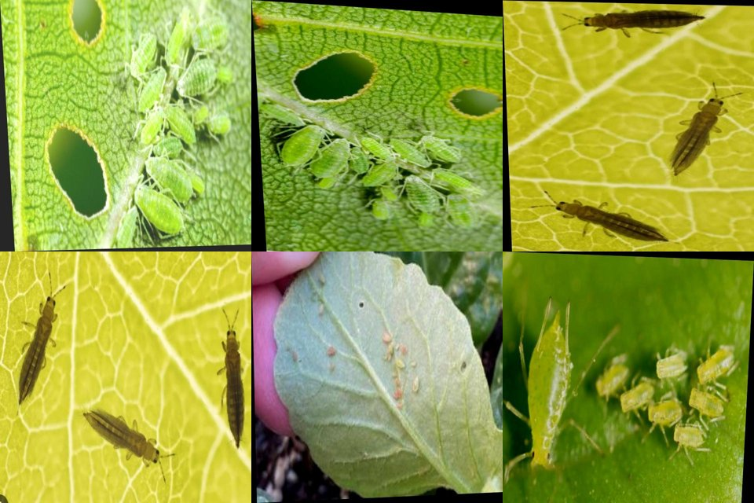
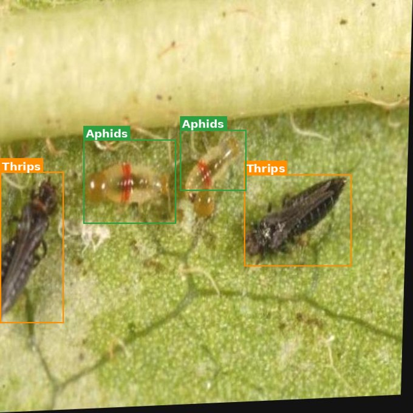
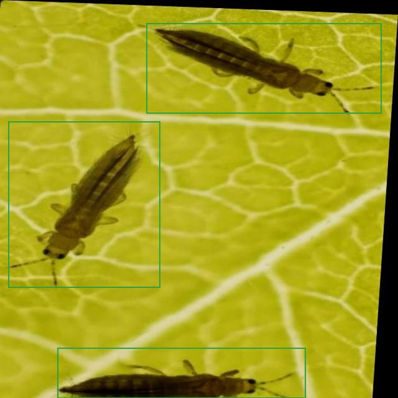
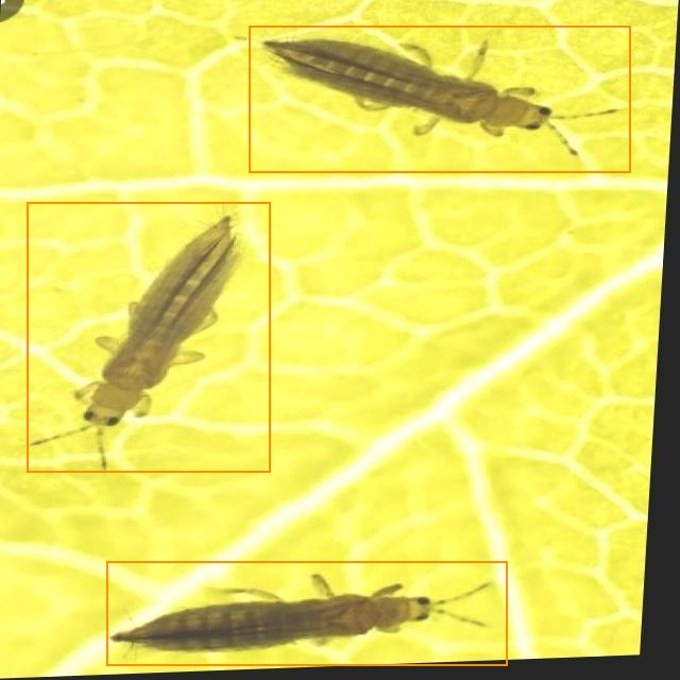
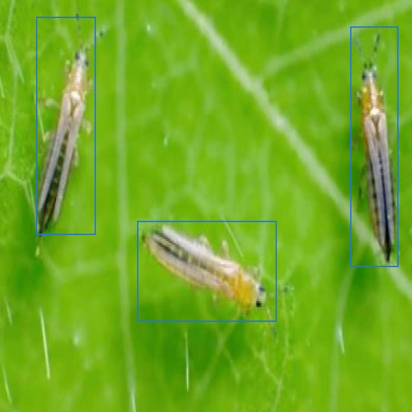

스마트팜 AI 서비스 Ⅰ
농작물 해충 및 작물 객체 탐지
농작물 해충을 탐지하는 AI 비전 서비스를 직접 만들어 봅니다. 객체 탐지 모델 실행부터 좌표 계산, JSON 결과 구성, 농작업 로봇 연계까지 스마트팜 AI 서비스의 한 흐름을 완성합니다.
1 스마트팜 AI 서비스 개요
스마트팜은 센서·카메라·로봇이 수집한 데이터를 AI가 해석해 농작업 의사결정을 돕는 농업 시스템입니다. 이 장에서는 "왜 AI가 필요한가"부터 서비스의 기본 구조까지 큰 그림을 잡습니다.
1.1 스마트팜에서 AI가 필요한 이유
농작물 상태 모니터링
넓은 농장을 사람이 일일이 살피기 어렵습니다. AI가 이미지로 생육·해충 발생 상태를 자동 점검합니다.
해충 조기 탐지
잎에 붙은 해충을 초기에 찾아내면 확산 전에 방제할 수 있어 피해와 농약 사용을 줄입니다.
작업 자동화·의사결정 지원
"어느 구역에 해충이 발생했는가"를 데이터로 제시해 방제·관수·수확 시점 판단을 돕습니다.
농작업 로봇과 AI 비전의 연결
탐지된 객체의 위치 좌표를 로봇에 전달하면, 로봇이 해당 지점으로 이동·작업할 수 있습니다.
1.2 스마트팜 AI 서비스의 기본 구조
대부분의 스마트팜 비전 서비스는 다음과 같은 파이프라인을 따릅니다. 이번 7회차 실습은 이 흐름 전체를 작게 구현하는 것이 목표입니다.
| 단계 | 역할 | 이번 실습 대응 |
|---|---|---|
| ① 입력 | 카메라·업로드 이미지 수집 | 작물 잎 테스트 이미지 폴더 |
| ② 탐지 모델 | 해충 위치·클래스 예측 | YOLO 가중치로 inference |
| ③ 해석 | 신뢰도·중복·오탐 판단 | confidence 기준 필터링 |
| ④ 저장·시각화 | 결과 이미지·JSON 생성 | 박스 표시 이미지 + JSON |
| ⑤ 연계 | 로봇 제어·모니터링 전달 | 중심좌표 → 제어 시스템 |
1.3 이번 실습의 목표
🎯 7회차에서 직접 해낼 것
- 농작물 해충 탐지 모델을 실행한다
- 탐지 결과(박스가 그려진 이미지)를 확인한다
- 객체 좌표와 신뢰도를 코드로 추출한다
- 탐지 결과를 JSON 형태로 구성·저장한다
- 간단한 스마트팜 탐지 화면을 구현한다
2 농작물 이미지 데이터의 특성
일반 사진과 달리 농작물 이미지는 야외·생물 대상이라 변동성이 큽니다. 모델 성능을 이해하려면 데이터의 특성을 먼저 알아야 합니다.
2.1 농작물 이미지 데이터의 특징
조명 변화
맑음·흐림·역광·그림자에 따라 같은 잎도 색이 달라집니다.
배경 복잡성
흙·잡초·다른 작물이 함께 찍혀 대상 분리가 어렵습니다.
잎의 겹침·가림
잎이 서로 겹쳐 해충 일부가 가려질 수 있습니다.
해충 크기·밀도 차이
한 마리는 매우 작지만, 번지면 잎 전체로 무리지어 퍼집니다.
촬영 거리·각도
가까이/멀리, 위/옆에서 찍으면 형태가 달라 보입니다.
표면 상태
물방울·흙 묻음·반사도 오탐의 원인이 됩니다.

2.2 정지 이미지와 영상 데이터의 차이
| 구분 | 정지 이미지 탐지 | 실시간 영상 탐지 |
|---|---|---|
| 처리 단위 | 한 장씩 | 프레임(frame) 단위로 연속 처리 |
| 속도 요구 | 상대적으로 여유 | 초당 여러 프레임(FPS) 실시간 처리 필요 |
| 정확도 | 한 장에 집중 가능, 높음 | 속도와 균형을 맞춰야 함 |
| 활용 | 업로드 진단, 보고서 | 로봇 주행, CCTV 모니터링 |
2.3 스마트팜 환경에서의 데이터 입력 방식
사용자 업로드 이미지
농민이 스마트폰으로 찍어 올린 잎 사진 — 이번 실습의 기본 입력.
고정형 CCTV·카메라
온실·논 특정 구역을 상시 촬영.
농작업 로봇 카메라
로봇이 이동하며 근접 촬영, 탐지 후 즉시 작업.
드론·이동형 촬영 장치
넓은 농장을 상공에서 광역 촬영.
3 객체 탐지 모델의 기본 이해
해충 탐지의 핵심 기술은 "객체 탐지(Object Detection)"입니다. 이미지 분류와 어떻게 다른지, YOLO가 무엇을 출력하는지 이해합니다.
3.1 객체 탐지란?
🏷️ 이미지 분류 (Classification)
"이 사진은 해충이 있는 잎이다" — 사진 전체에 라벨 하나. 위치는 모릅니다.
📦 객체 탐지 (Detection)
"여기, 여기, 여기에 해충가 있다" — 위치(박스) + 클래스 + 신뢰도를 함께 출력.
객체 탐지는 이미지 안에서 다음 3가지를 동시에 알려줍니다.
- 객체 위치 탐지 — 바운딩박스 좌표
(x1, y1, x2, y2) - 클래스 예측 — 그 박스가 어떤 해충인지 (예: Aphids)
- 신뢰도 점수(confidence) — 그 예측을 얼마나 확신하는지 (0~1)

3.2 YOLO 기반 탐지 방식
YOLO(You Only Look Once)는 이미지를 한 번만 보고 모든 객체를 동시에 찾아내는 빠른 객체 탐지 모델 계열입니다. 속도가 빨라 스마트팜·로봇·실시간 영상에 널리 쓰입니다.
inference(추론) 결과 구조
| 출력 항목 | 의미 | 예시 |
|---|---|---|
| 바운딩박스 | 객체를 감싼 사각형 좌표 | (120, 80, 240, 210) |
| 클래스 이름 | 탐지된 대상의 종류 | Aphids (진딧물) |
| confidence score | 예측 신뢰도 (0~1) | 0.87 |
하나의 이미지에서 YOLO는 위 묶음을 객체 개수만큼 출력합니다. 즉, 잎 한 장에 해충이 3마리면 3개의 (박스+클래스+신뢰도) 결과가 나옵니다.
3.3 탐지 결과 해석 방법
- 탐지 클래스 확인 — 어떤 해충으로 분류되었는지 본다.
- 신뢰도 기준 설정 — 예: 0.5 미만은 무시. 기준이 낮으면 오탐↑, 높으면 놓침↑.
- 중복 탐지 이해 — 같은 부위에 박스가 겹쳐 나올 수 있음(NMS로 정리).
- 잘못된 탐지(오탐) 판단 — 물방울·그림자를 해충으로 인식하는 경우를 사람이 검증.
4 농작물 해충 탐지 서비스 사례
이번 실습 대상인 "농작물 해충 탐지" 서비스의 전체 그림과 다루는 해충 클래스, 그리고 결과 유형을 살펴봅니다.
4.1 해충 탐지 서비스 개요
농민이 의심되는 잎 사진을 올리면, 모델이 해충 위치를 박스로 표시하고, 어떤 해충인지·얼마나 확신하는지를 함께 보여 줍니다. 결과는 이력 관리·로봇 연계를 위해 데이터로 저장됩니다.
4.2 주요 해충 클래스 이해
모델이 탐지할 수 있는 대상은 "학습된 클래스 목록"으로 정해져 있습니다. 대표적인 농작물 해충 예시는 다음과 같습니다. (실제 클래스는 사용하는 가중치 파일에 따라 다릅니다.)
| 클래스 ID | 클래스 이름(예) | 한글 이름 | 특징 |
|---|---|---|---|
| 0 | Aphids | 진딧물 | 잎·줄기에 무리지어 즙액을 빨아먹는 작은 벌레 |
| 1 | Thrips | 총채벌레 | 가늘고 길쭉한 몸, 잎에 은백색 흔적을 남김 |
| 2 | Whiteflies | 가루이 | 흰 가루 같은 작은 날벌레, 잎 뒷면에 다수 서식 |
모델별 클래스 정보 확인 방법
YOLO 모델에는 names 속성에 클래스 ID → 클래스 이름 매핑이 들어 있습니다. (코드는 5·8장에서 실행)
# 모델이 어떤 해충을 탐지할 수 있는지 확인 print(model.names) # 예: {0: 'Aphids', 1: 'Thrips', 2: 'Whiteflies'}
4.3 해충 탐지 결과 예시
정상 탐지
해충 위치에 정확히 박스, 높은 신뢰도(예 0.9). 이상적 결과.
다중 해충 탐지
한 잎에 여러 마리가 각각 박스로 탐지됨. 객체 수 = 박스 수.
오탐지
물방울·그림자를 해충으로 잘못 인식. 사람이 검증 필요.
신뢰도 낮은 탐지
신뢰도 0.3처럼 애매한 결과. 임계값으로 걸러 표시.
5 농작물 해충 탐지 모델 실행
이제 코드로 실제 탐지를 실행합니다. Python + Ultralytics YOLO를 사용합니다.
5.1 실습 환경 구성
| 구성 요소 | 설명 |
|---|---|
| Python 실행 환경 | Python 3.9+ (Colab / 로컬 venv 권장) |
| YOLO 라이브러리 | ultralytics 패키지 |
| 모델 가중치 파일 | pests.pt 등 학습된 .pt 파일 |
| 테스트 이미지 폴더 | images/ 안의 작물 잎 사진들 |
# 라이브러리 설치 pip install ultralytics # 폴더 구조 예시 project/ ├─ weights/ pests.pt # 모델 가중치 ├─ images/ leaf01.jpg ... # 테스트 이미지 └─ results/ # 결과 저장 폴더
이번 실습용 해충 탐지 데이터셋(진딧물·총채벌레·가루이)과 학습 코드는 아래 저장소에 있습니다. 데이터셋은 용량 때문에 Releases 에 올려두었습니다.
🔗
github.com/givememonkblanc/smartfarm-pest-detection# 1) 저장소 클론 (학습 코드 · Colab 노트북 포함) git clone https://github.com/givememonkblanc/smartfarm-pest-detection.git cd smartfarm-pest-detection # 2) 데이터셋 내려받기 (GitHub Release 에셋, 약 116MB) curl -L -o Pests.v3i.coco.zip \ https://github.com/givememonkblanc/smartfarm-pest-detection/releases/download/v1.0/Pests.v3i.coco.zip mkdir -p Pests && unzip -q Pests.v3i.coco.zip -d Pests # 3) COCO → YOLO 변환 후 학습 python prepare_dataset.py python train.py
Pests_YOLO_Colab.ipynb 노트북을 열어
위 과정을 셀 단위로 그대로 실행할 수 있습니다. (런타임을 GPU로 변경 권장)데이터셋 클래스 미리보기 (3종)



python prepare_dataset.py --oversample 로 소수 클래스를 보강할 수 있습니다.5.2 작물 잎 이미지 업로드 및 탐지
detect.pyfrom ultralytics import YOLO # ① 모델 로드 (가중치 파일 불러오기) model = YOLO("weights/pests.pt") # ② 이미지 한 장에 대해 해충 탐지 실행 results = model("images/leaf01.jpg", conf=0.5) # ③ 탐지 결과 요약 출력 for box in results[0].boxes: cls_id = int(box.cls[0]) name = model.names[cls_id] conf = float(box.conf[0]) print(f"탐지: {name} 신뢰도: {conf:.2f}")
5.3 탐지 결과 이미지 저장
YOLO는 바운딩박스·클래스명·신뢰도가 그려진 결과 이미지를 자동으로 만들어 줍니다.
detect.py (이어서)# 박스·클래스명·신뢰도가 그려진 이미지 저장 results[0].save(filename="results/leaf01_result.jpg") # 또는 save=True 로 자동 저장 (runs/detect/ 폴더에 생성) results = model("images/leaf01.jpg", save=True)
- 원본 vs 결과 비교 — 어디에 해충이 탐지됐는지 한눈에 확인
- 바운딩박스 — 해충을 감싼 사각형
- 클래스명·신뢰도 — 박스 위에
Aphids 0.87형태로 표시 - 결과 이미지 파일 저장 — 보고서·이력 관리에 사용
6 탐지 객체 좌표 계산
탐지 박스의 좌표를 이해하고, 로봇 작업에 필요한 "중심좌표"를 계산합니다.
6.1 바운딩박스 좌표 이해
YOLO 박스는 보통 (x1, y1, x2, y2) 형태입니다.
- (x1, y1) — 박스의 좌상단 모서리
- (x2, y2) — 박스의 우하단 모서리
(0,0) ───────────► x 증가 │ ┌───────────┐ │ │(x1,y1) │ │ │ 해충 │ │ │ (객체) │ │ │ (x2,y2)│ │ └───────────┘ ▼ y 증가
6.2 중심좌표 계산
로봇이 "어디로 가야 하는가"는 박스 모서리가 아니라 중심점으로 판단하는 것이 자연스럽습니다.
# 중심좌표 계산 공식 cx = (x1 + x2) / 2 # 중심 x cy = (y1 + y2) / 2 # 중심 ycenter.py
for box in results[0].boxes: x1, y1, x2, y2 = box.xyxy[0].tolist() # 좌표 4개 cx = (x1 + x2) / 2 cy = (y1 + y2) / 2 print(f"중심점: ({cx:.0f}, {cy:.0f})")
이 중심점을 결과 이미지에 점으로 찍어 시각화하면 로봇이 겨냥할 위치를 직관적으로 보여 줄 수 있습니다.
6.3 농작업 로봇 연계 관점
카메라 화면 내 객체 위치
중심좌표 = 화면 상의 픽셀 위치. 카메라 기준 "어디에 해충이 있는지".
해충 중심좌표 전달
이 좌표를 로봇 제어 시스템으로 넘긴다.
로봇 이동·작업 위치 판단
로봇이 해당 지점으로 이동해 방제·표식 작업.
후속 제어 시스템 연결
픽셀 좌표 → 실제 좌표 변환은 로봇 측 모듈이 담당.
7 탐지 결과 JSON 구성
탐지 결과를 다른 시스템(모니터링·로봇·DB)이 읽을 수 있도록 표준 데이터 형식인 JSON으로 만듭니다.
7.1 탐지 결과 데이터 구조
객체 하나당 다음 정보를 담습니다.
7.2 JSON 파일 저장
to_json.pyimport json from datetime import datetime detections = [] for box in results[0].boxes: x1, y1, x2, y2 = box.xyxy[0].tolist() cls_id = int(box.cls[0]) detections.append({ "class": model.names[cls_id], "confidence": round(float(box.conf[0]), 3), "bbox": [round(x1), round(y1), round(x2), round(y2)], "center": [round((x1+x2)/2), round((y1+y2)/2)], }) output = { "image": "leaf01.jpg", "time": datetime.now().isoformat(timespec="seconds"), "detections": detections, # 여러 객체 결과를 리스트로 } with open("results/leaf01.json", "w", encoding="utf-8") as f: json.dump(output, f, ensure_ascii=False, indent=2)
생성되는 JSON 예시
{
"image": "leaf01.jpg",
"time": "2026-06-30T14:05:21",
"detections": [
{
"class": "Aphids",
"confidence": 0.87,
"bbox": [120, 80, 240, 210],
"center": [180, 145]
},
{
"class": "Thrips",
"confidence": 0.74,
"bbox": [300, 160, 360, 220],
"center": [330, 190]
}
]
}
7.3 후속 시스템 전달 형태
모니터링 서비스 연계
구역별 탐지 건수·해충 종류를 대시보드로 표시.
로봇 제어 시스템 연계
center 좌표를 로봇 작업 명령으로 변환.
데이터베이스 저장
이력 누적 → 발생 추세·구역 분석.
API 응답 형태
이 JSON을 그대로 REST API 응답으로 반환.
8 모델 선택 및 가중치 교체
같은 코드로 다른 작물·다른 객체를 탐지하려면 "가중치 파일"만 바꾸면 됩니다. 그 의미를 이해합니다.
8.1 YOLO 가중치 파일의 역할
- 모델 구조 + 가중치 —
.pt파일에는 신경망 구조와 학습된 숫자(가중치)가 담겨 있습니다. - 학습된 클래스 정보 — 어떤 대상을 탐지하도록 학습됐는지가 함께 저장됩니다.
- 가중치 교체의 의미 — 코드는 그대로 두고
.pt파일만 바꾸면 탐지 대상이 바뀝니다.
8.2 모델별 클래스 정보 확인
# 어떤 대상을 탐지할 수 있는지 확인 print(model.names) # 클래스 이름 목록 print(len(model.names)) # 클래스 수
- 클래스 이름 확인 — 모델이 무엇을 아는지
- 클래스 수 확인 — 몇 종류를 구분하는지
- 탐지 가능 대상 확인 — 목록에 없는 대상은 절대 탐지 못함
8.3 모델 선택 기능 구현
select_model.pyMODELS = {
"해충 탐지": "weights/pests.pt",
"잡초 탐지": "weights/weed.pt",
"과실 탐지": "weights/fruit.pt",
}
def load_model(name):
return YOLO(MODELS[name]) # 선택한 모델만 로드
model = load_model("해충 탐지") # 드롭다운 선택값과 연결
model.names 기준으로 다시 매핑해야 하며, 잘못된 작물에 다른 모델을 쓰면 결과가 무의미합니다.9 AI 시스템 아키텍처 기초
모델을 "한 번 실행"하는 것과 "서비스로 운영"하는 것은 다릅니다. 이번 장부터는 모바일로 촬영한 사진을 서버가 추론하고, 결과를 DB에 쌓아 웹에서 확인하는 실제 서비스 아키텍처를 직접 만듭니다.
9.1 추론 서버(Inference Server)란?
학습된 모델(.pt)을 메모리에 올려두고, 들어오는 이미지에 대해 추론 결과를 돌려주는 상시 대기 프로그램입니다. 핵심은 모델을 한 번만 로드해 두고 요청마다 재사용하는 것입니다.
❌ 매번 실행 방식
요청마다 python detect.py 실행 → 모델 로드에 수 초. 느리고 동시 사용 불가.
✅ 추론 서버 방식
서버 시작 때 모델 1회 로드 → 요청은 즉시 처리. 여러 사용자가 동시에 사용.
9.2 우리가 만들 전체 서비스 구조
┌─────────────┐ ①사진 업로드(POST) ┌──────────────────────┐
│ 📱 모바일 │ ───────────────────▶ │ 🧠 추론 서버 (Flask) │
│ capture.html│ │ - YOLO 모델 1회 로드 │
│ (촬영·전송) │ ◀─────────────────── │ - /predict 추론 │
└─────────────┘ ②결과 JSON 응답 │ - 결과 저장 │
└──────────┬───────────┘
③저장 │ ④조회
▼ ▼
┌─────────────┐ ⑤이력 조회(GET) ┌──────────────────────┐
│ 💻 웹 대시보드│ ◀────────────────── │ 🗄️ SQLite (data.db) │
│dashboard.html│ │ 탐지 이력 1건=1행 │
└─────────────┘ └──────────────────────┘
▲
│ ⑥ Cloudflare Tunnel 로 인터넷에 공개 (16장)
| 구성요소 | 역할 | 기술 | 파일 |
|---|---|---|---|
| 모바일 클라이언트 | 사진 촬영·업로드, 결과 표시 | HTML/JS | app/templates/capture.html |
| 추론 서버 | 이미지 받아 YOLO 추론 → JSON | Flask + Ultralytics | app/server.py |
| 데이터베이스 | 탐지 이력 저장·조회 | SQLite | app/db.py |
| 웹 대시보드 | 전체 이력·이상여부 확인 | HTML/JS | app/templates/dashboard.html |
| 배포 | 인터넷에 공개 | Cloudflare Tunnel | cloudflared |
9.3 요청·응답(Request/Response) 흐름
- 요청(Request) — 클라이언트가 서버로 보내는 것. 우리는 사진을
POST로 전송. - 응답(Response) — 서버가 돌려주는 것. 우리는 탐지 결과
JSON을 반환. - 엔드포인트(Endpoint) — 기능별 주소. 예:
/predict(추론),/api/history(이력).
10 추론 서버 구축 (Flask)
Python 웹 프레임워크 Flask로 추론 서버를 만듭니다. 저장소의 app/ 폴더에 완성 코드가 있으니, 직접 실행하며 구조를 익힙니다.
10.1 REST API 설계
먼저 "어떤 주소가 무슨 일을 하는지"를 정합니다. 이것이 API 설계입니다.
| 메서드 | 경로 | 역할 |
|---|---|---|
| GET | / | 모바일 촬영 화면(capture.html) |
| POST | /predict | 사진 추론 → 저장 → 결과 JSON |
| GET | /api/history | 최근 탐지 이력 JSON |
| GET | /dashboard | 웹 결과 확인 대시보드 |
| GET | /uploads/<파일> | 업로드된 원본 이미지 제공 |
10.2 서버와 /predict 구현
핵심 1 — 모델은 시작할 때 딱 한 번 로드합니다.
app/server.pyfrom flask import Flask, request, jsonify, render_template, send_from_directory from ultralytics import YOLO import db, datetime # ① 모델 1회 로드 (요청마다 로드하면 매우 느림) model = YOLO("../weights/pests.pt") app = Flask(__name__) db.init_db() # DB 테이블 준비
핵심 2 — /predict: 사진을 받아 추론하고, 결과를 DB에 저장한 뒤 JSON으로 응답합니다.
@app.route("/predict", methods=["POST"]) def predict(): f = request.files["image"] # 업로드된 사진 fname = datetime.datetime.now().strftime("%Y%m%d_%H%M%S_%f") + ".jpg" f.save(UPLOAD_DIR / fname) # 원본 저장 r = model.predict(str(UPLOAD_DIR / fname), conf=0.25)[0] dets, counts = [], {} for b in r.boxes: # 박스마다 클래스·좌표 추출 name = model.names[int(b.cls[0])] x1,y1,x2,y2 = (float(v) for v in b.xyxy[0]) dets.append({"class": name, "confidence": round(float(b.conf[0]),3), "bbox":[x1,y1,x2,y2], "center":[(x1+x2)/2,(y1+y2)/2]}) counts[name] = counts.get(name,0)+1 record = {"created_at": datetime.datetime.now().isoformat(), "image": fname, "status": "이상" if dets else "정상", # 1마리라도 있으면 이상 "pest_count": len(dets), "classes": counts, "detections": dets} db.insert(record) # SQLite 저장 (11장) return jsonify(record) # 클라이언트로 JSON 응답
10.3 서버 실행·확인
terminalcd app pip install -r requirements.txt python server.py # http://0.0.0.0:8000 # 다른 터미널에서 추론 테스트 (사진 1장 전송) curl -F "image=@../Pests/test/images/A11_....jpg" http://127.0.0.1:8000/predict
weights/pests.pt 가 있으면 해충을 탐지합니다. 없으면 코드가 yolo11n.pt(사전학습)로 자동 대체해 파이프라인만 시연합니다. GPU 오류 시
DEVICE=cpu python server.py 로 CPU 실행하세요.11 데이터 저장 (SQLite)
추론만 하고 끝나면 결과가 사라집니다. SQLite에 이력을 쌓아 두면, 나중에 웹에서 "언제 어디서 무슨 해충이 나왔는지" 다시 볼 수 있습니다.
11.1 왜 DB가 필요한가
이력 보존
진단 결과를 영구 저장해 추세·통계 분석.
조회·검색
"이상" 건만, 특정 기간만 골라 보기.
화면 분리
모바일은 저장만, 웹은 조회만 — 느슨한 연결.
data.db)가 곧 데이터베이스입니다. 별도 설치·서버가 필요 없어 실습·소규모 서비스에 적합합니다. Python에 sqlite3가 기본 내장되어 있습니다.11.2 테이블 설계
탐지 결과 1건을 테이블 1행으로 저장합니다.
detections 테이블CREATE TABLE detections ( id INTEGER PRIMARY KEY AUTOINCREMENT, created_at TEXT, -- 저장 시각 image TEXT, -- 사진 파일명 status TEXT, -- '정상' / '이상' pest_count INTEGER, -- 해충 마릿수 classes TEXT, -- 클래스별 개수 (JSON 문자열) detections TEXT -- 박스 상세 (JSON 문자열) );
11.3 저장·조회 코드
app/db.pyimport sqlite3, json def insert(rec): # 결과 1건 저장 with sqlite3.connect(DB_PATH) as c: c.execute("INSERT INTO detections (created_at,image,status,pest_count,classes,detections)" " VALUES (?,?,?,?,?,?)", (rec["created_at"], rec["image"], rec["status"], rec["pest_count"], json.dumps(rec["classes"]), json.dumps(rec["detections"]))) def recent(limit=50): # 최신순 이력 조회 with sqlite3.connect(DB_PATH) as c: rows = c.execute("SELECT * FROM detections ORDER BY id DESC LIMIT ?", (limit,)).fetchall() return [dict(r) for r in rows]
? 자리표시자로 넘기세요. 문자열을 직접 이어붙이면 보안 취약점이 생깁니다.12 모바일 촬영 클라이언트 (HTML)
사용자가 실제로 만지는 화면입니다. 모바일 브라우저에서 카메라로 촬영해 서버로 보내고, 진단 결과를 바로 보여 줍니다. 순수 HTML+JavaScript로 만듭니다.
12.1 카메라 촬영 화면
HTML <input> 한 줄로 모바일 카메라를 띄울 수 있습니다. capture="environment"가 후면 카메라를 엽니다.
<!-- 모바일 카메라 촬영/선택 --> <input type="file" id="file" accept="image/*" capture="environment"> <canvas id="canvas"></canvas> <!-- 미리보기·박스 표시 --> <button id="go">🔍 진단하기</button>
12.2 업로드·결과 표시
버튼을 누르면 fetch로 사진을 /predict에 보내고, 돌아온 JSON으로 정상/이상과 해충 종류를 표시합니다.
const fd = new FormData(); fd.append("image", picked); // 촬영한 사진 const res = await fetch("/predict", {method:"POST", body:fd}); const data = await res.json(); // 서버 응답(JSON) // 정상/이상 배지 표시 status.innerHTML = data.status === "정상" ? "✅ 정상" : `⚠️ 이상 (해충 ${data.pest_count}마리)`; // 박스를 캔버스에 그려 어떤 해충인지 시각화 (data.detections 사용)
13 웹 결과 확인 대시보드 (HTML)
관리자가 PC 웹에서 전체 진단 이력을 한눈에 봅니다. 모바일이 쌓은 데이터를 /api/history로 불러와 카드로 보여 줍니다.
13.1 이력 조회 API 호출
app/templates/dashboard.html (script)async function load(){ const rows = await (await fetch("/api/history")).json(); // 통계: 전체/이상/누적 해충 수 total.textContent = rows.length; abnormal.textContent = rows.filter(r => r.status === "이상").length; // 카드 렌더링 (썸네일 + 상태 + 해충 종류) grid.innerHTML = rows.map(renderCard).join(""); } load(); setInterval(load, 5000); // 5초마다 자동 새로고침
13.2 이상여부 시각화
- 상태 배지 — ✅ 정상 / ⚠️ 이상을 색으로 구분
- 해충 종류·마릿수 —
classes를 "Aphids 3, Thrips 1"처럼 표시 - 썸네일 —
/uploads/<파일>원본 이미지 - 상단 통계 — 총 진단 / 이상 건수 / 누적 해충 수
[ 총 12건 ] [ 이상 5건 ] [ 누적 38마리 ]
┌────────────┐ ┌────────────┐ ┌────────────┐
│ 🖼 ⚠️ 이상 │ │ 🖼 ✅ 정상 │ │ 🖼 ⚠️ 이상 │
│ Aphids 3 │ │ 해충 없음 │ │ Thrips 2 │
└────────────┘ └────────────┘ └────────────┘
14 OpenCode AI 에이전트로 개발 가속
위 코드는 저장소에 완성되어 있지만, 화면을 바꾸거나 기능을 더할 때 OpenCode 같은 AI 코딩 에이전트를 쓰면 자연어 지시만으로 빠르게 개발할 수 있습니다.
14.1 OpenCode란?
OpenCode는 터미널에서 동작하는 오픈소스 AI 코딩 에이전트입니다. 한국어/영어로 "이런 기능을 만들어줘"라고 지시하면, AI가 파일을 읽고 코드를 작성·수정하고 명령어까지 실행합니다.
자연어로 지시
"대시보드에 날짜별 필터를 추가해줘"처럼 말로 요청.
프로젝트 전체 이해
app/ 코드를 스스로 읽고 맥락에 맞게 수정.
터미널에서 실행
별도 IDE 없이 명령창에서 대화형으로 작업.
모델 선택 자유
Claude(Opus/Sonnet) 같은 최신 모델 권장.
14.2 설치와 실행
terminal# 설치 (택1) curl -fsSL https://opencode.ai/install | bash npm install -g opencode-ai opencode auth login # 사용할 AI 모델 연결 cd pest-detection-web opencode # 대화형 화면 열림
opencode.ai)에서 최신 방법을 확인하세요.14.3 자연어로 개발하기
구체적으로, 한 번에 하나씩 요청하는 것이 좋습니다.
opencode 프롬프트 예시"app/server.py 에 GET /api/stats 엔드포인트를 추가해줘. - 전체 진단 수, 이상 비율, 가장 많이 나온 해충을 JSON으로 반환 - SQLite 의 detections 테이블을 집계해서 계산"
- 읽기 → 수정 → 실행 — 에이전트가 만든 코드를 사람이 확인하고 승인합니다.
- 반복 개선 — "배지 색을 빨강으로", "이상 건만 보여줘"처럼 이어서 다듬습니다.
- 최종 책임은 사람 — 동작·정확성을 직접 검증해야 합니다.
15 GitHub 저장소 관리
완성한 서비스 코드를 GitHub에 올려 버전 관리하고, 배포·협업의 기반을 만듭니다.
15.1 Git·GitHub 기초
- Git — 코드 변경 이력을 관리하는 도구(커밋 단위로 기록).
- GitHub — Git 저장소를 올려 두는 클라우드 서비스.
- 커밋(commit) — 변경 묶음 저장 · 푸시(push) — GitHub로 업로드.
15.2 저장소 생성·연결
terminal# 프로젝트 폴더에서 git init git add . git commit -m "최초 커밋: 해충 탐지 서비스(서버+DB+화면)" git branch -M main git remote add origin https://github.com/<사용자명>/pest-detection-web.git git push -u origin main
*.pt), DB(app/data.db), 업로드 이미지(app/uploads/), 데이터셋은 .gitignore로 빼세요.*.pt app/data.db app/uploads/ Pests/ __pycache__/
15.3 커밋·푸시 흐름
16 Cloudflare로 배포
내 PC에서 도는 추론 서버를 인터넷에 공개해, 진짜 휴대폰으로 접속해 봅니다. Cloudflare Tunnel을 쓰면 공인 IP·포트개방 없이 안전하게 외부 공개할 수 있습니다.
16.1 터널(Tunnel)이란?
내 컴퓨터의 localhost:8000을 Cloudflare가 발급한 공개 주소(https)와 연결해 주는 통로입니다. 외부에서 그 주소로 들어오면 터널을 통해 내 서버로 전달됩니다.
📱 휴대폰 ──https──▶ 🌍 Cloudflare ──터널──▶ 🖥️ 내 PC (localhost:8000 Flask)
16.2 cloudflared 설치·실행
terminal# 1) cloudflared 설치 (예시 — OS별 공식 문서 참고) # macOS brew install cloudflared # Windows winget install --id Cloudflare.cloudflared # Linux 공식 .deb/.rpm 설치 # 2) 추론 서버 먼저 실행 (한 터미널) cd app && python server.py # localhost:8000 # 3) 다른 터미널에서 터널 열기 cloudflared tunnel --url http://localhost:8000
실행하면 https://무작위이름.trycloudflare.com 같은 공개 주소가 출력됩니다. 이게 곧 우리 서비스의 인터넷 주소입니다.
16.3 외부 공개·휴대폰 접속
- 출력된 주소를 휴대폰 브라우저에 입력 → 촬영 화면이 열립니다.
- 잎을 촬영 → 즉시 정상/이상 진단 →
/dashboard에서 PC로 확인. - 주소를 QR 코드로 만들면 휴대폰으로 바로 접속하기 편합니다.
--url 방식(Quick Tunnel)은 실행할 때마다 주소가 바뀝니다. 고정 도메인이 필요하면 Cloudflare 계정에 Named Tunnel을 등록하세요. 정적 화면만 따로 배포하려면 Cloudflare Pages도 활용할 수 있습니다.17 통합 실습 & 제출
지금까지 만든 전체 시스템이 처음부터 끝까지 동작하는지 점검하고, 산출물을 정리해 제출합니다.
17.1 전체 흐름 점검 (체크리스트)
| 단계 | 확인 내용 | 관련 장 |
|---|---|---|
| ① 모델 | weights/pests.pt 준비(Colab 학습) | 5장 · 노트북 |
| ② 서버 | python server.py 로 추론 서버 기동 | 10장 |
| ③ DB | 진단 후 data.db에 행이 쌓이는지 | 11장 |
| ④ 모바일 | 촬영 → 정상/이상·해충 종류 표시 | 12장 |
| ⑤ 대시보드 | /dashboard에서 이력·통계 확인 | 13장 |
| ⑥ 배포 | Tunnel 주소로 휴대폰 접속 성공 | 16장 |
17.2 산출물 제출
- ✅ GitHub 저장소 주소(
pest-detection-web) - ✅ 모바일 진단 결과 화면 캡처(정상 1건 · 이상 1건)
- ✅ 웹 대시보드 화면 캡처(이력 여러 건)
- ✅ Cloudflare Tunnel 공개 주소(접속 시연) 또는 접속 영상
- ✅ 한 줄 회고 — "추론 서버·DB·배포 중 가장 어려웠던 점"